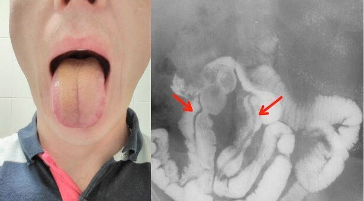

Los médicos dan la voz de alarma: ¡el mal aliento es la primera señal de una infección parasitaria!
Hola a todos,
¿Os suena el sentimiento de culpa por no poder ayudar a la persona a la que queréis cuando se siente mal y simplemente la veis sufrir? Yo he pasado por eso y quiero contaros lo que le sucedió a mi familia para que no repitáis mi error.
Carlos y yo hemos estado viviendo juntos durante 27 años, y durante ese tiempo nunca nos habíamos peleado. Nuestros amigos siguen llamándonos "recién casados". Tenemos muchos planes para el futuro. Sin embargo, no podemos hacer nada.
Todo comenzó cuando mi marido comenzó a quejarse del mal aliento . Soy médico, así que fuimos a revisar sus dientes y el estómago, y no detectamos ningún síntoma de enfermedad, pero luego aparecieron otros síntomas preocupantes .
Mi marido empezó a tener flatulencia y, además, no comía bien y se puso muy delgado.
Comenzó a quejarse del dolor en el corazón, el hígado y el páncreas . Fuimos a hacerle un electrocardiograma y un análisis de sangre, pero los resultados no mostraron nada.
Además, nuestra vida íntima empeoró también . Un día, me dijo que tenía problemas de erección. Un hombre fuerte y enérgico como él de repente se convirtió en un hombre sin vida, al que siempre había que empujar a hacer algo y que poco a poco perdía interés por la vida .
Cuando llegamos al hospital, el médico le dio a mi marido un diagnóstico terrible - una infección parasitaria . Casi el 70% del cuerpo de mi marido estaba invadido por parásitos - estaban por todas partes. No podía entender la razón de esto, ya que mi casa estaba siempre limpia, tenía papel desinfectante, nuestra comida se cocinaba cuidadosamente y se limpiaban bien los platos. Nunca hubiera podido pensar que estos leves síntomas eran una señal de infección parasitaria.
Seguí pensando, ¿CÓMO PASÓ ESTO? Tomé las pruebas de mi marido y escribí una carta al Centro Africano de Investigación de Parásitos. En unos días me mandaron una impactante respuesta:

"Todos los problemas de su marido se deben a los primeros síntomas de una infección parasitaria . Cuando una persona es infectada por parásitos, el cuerpo comienza a destrozarse lentamente. Al principio no es aparente, pero luego se manifiesta. Todo comienza con mal aliento, flatulencia, depresión, dolores de cabeza, ojeras, falta de apetito, dolor en las articulaciones y los músculos. En los hombres, los parásitos causan prostatitis, impotencia, disfunción cardíaca y hepatopatía. En las mujeres, los parásitos causan vaginitis, hinchazón de los ovarios, urocistitis, desarrollo de fibromas ováricos, tumores de ovarios poliquísticos, hinchazón de los riñones y el tracto urinario y, también, envejecimiento de la piel. En los niños, los parásitos causan acné y lagrimeo. Si se ignoran estos leves síntomas , los órganos internos pueden llegar a pudrirse, lo que provocará la muerte".
850.000 personas en España mueren cada año sin darse cuenta de que la causa de su terrible enfermedad son los parásitos. Estos asesinos invisibles están en todas partes, en los pescados, las verduras y las frutas que la gente compra en los supermercados o mercadillos.
Empecé a buscar una solución. Casi me vuelvo loca porque no podía mirar tranquilamente cómo sufría la persona a la que quería delante de mis ojos. Dormí muy poco, leí docenas de libros, les pregunté a mis colegas. Probamos un montón de medicamentos inútiles y el médico no pudo hacer nada. Su condición empeoró. Me sentí inútil y me culpé a mí misma por no haber podido salvarlo.
Cuando pensé que todo estaba perdido, encontré una cosa en Internet: Avormin .
Casi 250.000 personas infectadas usaron este producto para tratar la enfermedad y en dos días consiguieron eliminar casi 300 parásitos diferentes.
Encuesta: ¿Cómo eliminaste tus parásitos?
Medicamentos
23%
Avormin
67%
Todavía estoy buscando un método
10%
Al principio, sospeché un poco, pero la condición de mi marido no iba para mejor, así que decidí actuar. El producto llegó en un día.
Por la mañana, mi marido se tomó 3 cápsulas con un zumo de naranja recién exprimido y por la tarde ya se sintió mucho mejor. Al principio, comenzó a comer mejor y ya no salía ese olor a podrido de su boca, y luego los parásitos desaparecieron prácticamente por completo. . Gracias a Avormin nos sentimos tan aliviados que no os podéis ni imaginar.
Después de un día, su función hepática e intestinal se recuperó al 65%, ahora los riñones y los latidos del corazón han vuelto a la normalidad. Después de 3 días, mi marido me dijo que cuando no había nadie en la habitación, tuvo una erección. Los ingredientes naturales contenidos en Avormin (extracto de Apium graveolens, extracto de frutas de Phyllanthus emblica, extracto de hojas de centella asiática (Gothu kola) y extracto de raíz de Curcuma longa) actúan de forma activa para regenerar los tejidos, por lo que el tratamiento es más rápido.

Después de 5 días, mi marido se sometió a más pruebas. No hubo signos de parásitos en el cuerpo. Avormin eliminó todos los huevos y otras sustancias dañinas en pocas horas. Gracias al efecto acumulativo, Avormin fortalece el sistema inmunitario y protege las células de los parásitos. Esto ayuda a evitar la posibilidad de volver a infectarse durante un largo período de tiempo. Una semana más tarde, mi marido se recuperó por completo.
Más tarde, comprendí por qué no había encontrado Avormin en las farmacias. La razón es que este producto es nuevo y muy eficaz (lo hemos comprobado), pero no se anuncia ampliamente por temor a subidas de precios y falsificaciones. Por lo tanto, el producto solo se puede comprar en línea.
¡No cometáis el mismo error que yo! Si hubiera prestado atención a estos síntomas aparentemente inofensivos mucho antes (flatulencia, mal aliento, mala erección) , mi marido no se hubiera puesto tan enfermo.
Avormin trata de inmediato los primeros síntomas de la infección parasitaria y elimina la posibilidad de su reaparición , así que, si después de leer mi historia descubrís aunque solo sea un síntoma, por favor, ¡COMENZAD EL TRATAMIENTO AHORA MISMO!
Proteged a vuestros seres queridos y a vosotros mismos, pedid Avormin tan pronto como aparezcan los primeros síntomas y no esperéis hasta que la cosa se complique.